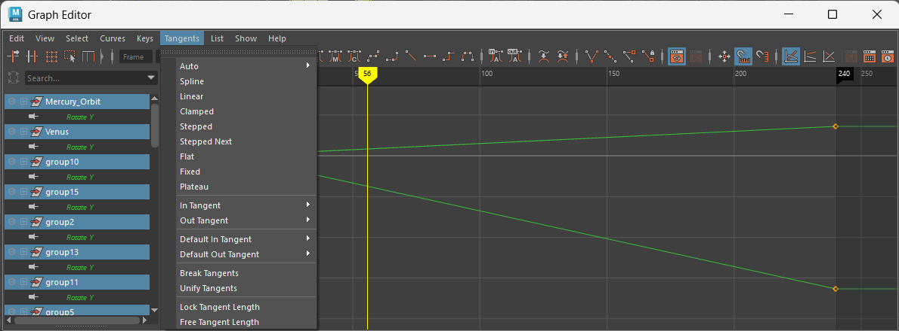

Brian F. 9/16/25
Here is the Completed Tutorial.
And here is the Modified Tutorial.
Modification renders:
Since the Planet Fitness texture didn't seem to show up in the playblast, I figured it would be best to communicate their personality through their movements. Sloppy and drunken, Planet Fitness hasn't been doing so well ever since they cheated on Saturn with Pizza Planet. Saturn knows she can't go back, but she doesn't realize that he never truly left. They're terrible for each other; Saturn needs to throw away that ring and move on.
You can't really see the animation adjustments in the render, so here's a picture of the graph editor.

I kept the animations uniform as a reminder of my struggle to find how to keyframe the rotations of all of the planets and moons at once. It turns out the problem was I was using object select not collection select.